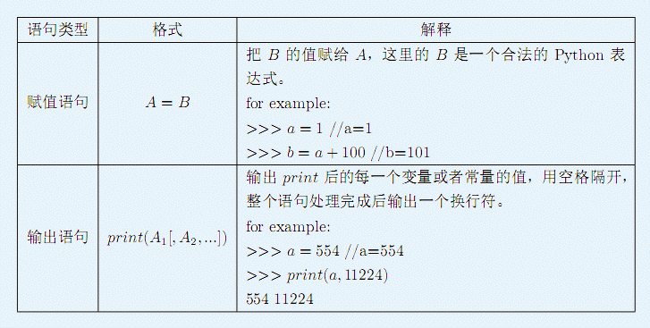

保证输入文件是一个合法的Python脚本文件，可以直接用Pvthon3.X解释运行
小呆同学非常的懒，做数学题的时候喜欢用Python做计算器，写一个脚本，用Python运行一下，把答案写到书上。
2017年的一天，小呆遇到了一道很难的数学题，有上千个计算步骤，他辛辛苦苦地把需要的Python脚本写完。但是悲剧发生了，他的Python解释器坏了，而且由于“特殊”的访问限制，他无法登上www.python.org重新下载Pvthon解释器所以他决定自己写一个简单的Python解释器以满足他的做题要求，但是他没有时间，他还要去做其他的题目，所以他把编写Python解释器这个艰巨的任务交给了你，一个未来的THUer。
你被要求实现Python解释器中两种简单的功能：

为了降低本问题的难度，特别约定：
·变量名由5～8个小写字符构成('a’一’Z')。
·表达式中只会出现+，一，术，／四种运算符(不存在括号，除法运算符为整除并且使用//表示)。
·在Python语言中默认是支持大整数运算的，为了简化问题，保证所有的常量都不大 于2^15 -1，但不保证输出结果以及中间过程的值不大于2^15 -1，即，你有可能需要高精度计算
·保证出现在赋值语句等号右边的变量以及在输出语句中出现的变量都被赋值过。
·中间过程及答案可能出现负数。
保证输入文件是一个合法的Python脚本文件，可以直接用Pvthon3.X解释运行
按照题目要求输出
ctxbve=89+5+29-38
bhzocwv=41-ctxbve-73+10-81+78-ctxbve
kgthkrh=51-bhzocwv+bhzocwv-bhzocwv-ctxbve+41-ctxbve+23
ldvxco=kgthkrh+bhzocwv+kgthkrh-bhzocwv-33-ctxbve-59+57-61
print (bhzocwv)
Imohn=kgthkrh
print (12,77,kgthkrh,kgthkrh,lmohn,kgthkrh,ldvxco,16,29,lmohn,ldvxco)
print (bhzocwv,ldvxco,ctxbve,ldvxco,kgthkrh,kgthkrh,ldvxco)
-195
12 77 140 140 140 140 99 16 29 140 99
-195 99 85 99 140 140 99
输入文件长度不超过10000行。